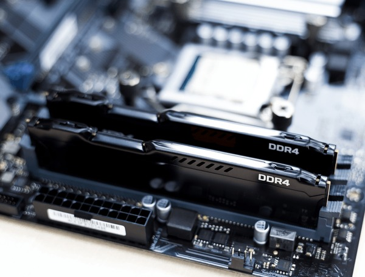

RAM is often misunderstood. People either buy too little and run into slowdowns, or spend money on ultra-fast kits that offer little real-world benefit. This guide will help you know exactly what to buy.
What Is RAM?
RAM (Random Access Memory) is your PC's short-term workspace. If it's too small, you can only work on a few things at a time. If it's large you can spread out everything and multitask. More space = more programs can be open at once without slowing down.
When you open a browser, game, or video editor, the data is loaded into RAM so your CPU can access it almost instantly. Without enough RAM, your computer is forced to use your storage drive as overflow, which is dramatically slower.
Unlike storage (which keeps files permanently), RAM is volatile — everything in it is erased when you turn the power off.

DDR4 DIMM sticks — the most common RAM type for current builds.
Why RAM Matters
Imagine you're a student doing homework:
Your brain (CPU) does the thinking and solving
Your desk (RAM) holds your books, notes, calculator
Your backpack (Storage/SSD) holds everything you're not using right now
If your desk (RAM) is too small, you keep running to your backpack (slow storage) to get things — that makes everything SLOW. That's why having enough RAM is so important.
EXAMPLE: When you have 20 Chrome tabs open, each tab needs a set amount of RAM to run. You run out of RAM? Your computer will start to use your SSD as "fake RAM" which are 100x slower than actual RAM.
How Much RAM Do You NEED?
8GB RAM - The Bare Minimum
Browsing with 5-10 tabs
Microsoft Office
Light gaming (Minecraft, CSGO, LoL)
Cannont multitask effectively
Will struggle with AAA games
Best for: School computers, budget builds
16GB RAM - The Sweet Spot!
A lot of Chrome tabs + Spotify + Discord
All modern games (Cyberpunk, COD, Fortnite)
Light video editing
Gaming + streaming
Everything a normal person does
Best for: Most gamers, students, professionals
32GB RAM - For Power Users
Video editing (4K videos)
3D modeling and rendering
Streaming + gaming at the same time
Virtual machines (running Windows inside Windows)
Professional work
Best for: Content creators, programmers, serious gamers who also stream
90% OF GAMERS RECOMMEND 16GB It's the perfect amount for gaming and everyday use. So don't overthink it!
RAM Speed: Does It Matter?
RAM speed is measured in MHz (Megahertz). Think of it as the maximum speed of a car.
2133-2666MHz: Gets the job done, but not fast.
3000-3200MHz: Perfect for most people.
3600-4000MHz: Makes a difference, especially for AMD Ryzen CPUs.
4800MHz+ (DDR5): Super fast, but needs a motherboard that can support it.
Pro Tip: RAM speed matters, but not as much as people think. 3200MHz vs 3600MHz might give you 5-10 more FPS. Worth it if the price is similar, but don't pay double for tiny gains.
DDR4 vs DDR5: What's the Difference?
Think of it like the difference between the A and S series of Samsung phones.
DDR4 (Current Standard):
Cheaper (save ₱2,000-4,000)
Works with AM4 motherboards (Ryzen 1000-5000 series)
Works with Intel 12th-14th gen with DDR4 boards
16GB (2x8GB) 3200MHz costs around ₱3,500-4,500
DDR5 (New Standard):
Faster speeds (4800MHz+)
More future-proof
Works with AM5 motherboards (Ryzen 7000+ series)
Works with Intel 12th-14th gen with LGA1700 motherboards
More expensive (₱4,000-8,000 for 16GB)
Which to choose? If building new with Ryzen 7000 or Intel 13th gen+, consider DDR5. If on a budget, DDR4 is still great.
Dual Channel: Install RAM Correctly!
This is SUPER IMPORTANT and many beginners get it wrong!
RULE: Always buy RAM in PAIRS (2 sticks, 4 sticks) for best performance!
Two 8GB sticks running together is about 20-30% faster than one 16GB stick.
INSTALLATION TIP: On most motherboards with 4 RAM slots, use slots 2 and 4 for dual channel. Check your motherboard manual to be sure.
Recommended RAM by Use Case
What You Do
Capacity
Speed
Configuration
School, Office, Web
8-16GB
2666-3200MHz
1x8GB or 2x8GB
Gaming (1080p/1440p)
16GB
3200-3600MHz
2x8GB (Dual Channel!)
Gaming + Streaming
32GB
3600MHz
2x16GB
Video Editing / 3D Work
32-64GB
3600MHz+
2x16GB or 4x16GB
BUYING TIP: RAM is one of the easiest parts to upgrade later! If budget is tight, buy 1x16GB now, then add another 16GB later. But for best performance now, 2x8GB is the way to go.
Does RAM Brand Matter?
The memory chips inside most sticks come from a handful of manufacturers (Samsung, Hynix, Micron). Brand-name kits from Corsair, G.Skill, Kingston, and Crucial are reliable and come with warranties. For budgets builds, Kingston's Value RAM works well. For overclocking potential, G.Skill Ripjaws and Corsair Vengeance are popular choices.
Watch out: Check your motherboard's QVL (Qualified Vendor List) before buying. Not all RAM kits are guaranteed compatible — especially with DDR5 and newer chipsets.
QUICK SUMMARY:
• RAM = Workspace desk space
• 16GB = Perfect for 90% of gamers
• Always buy in pairs for dual channel
• 3200MHz is the sweet spot for speed
• DDR4 = cheaper, DDR5 = newer and faster
• More RAM = More Chrome tabs without slowing down.